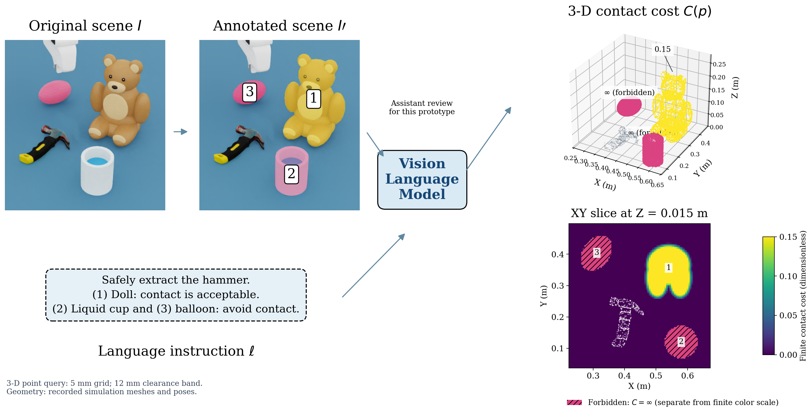
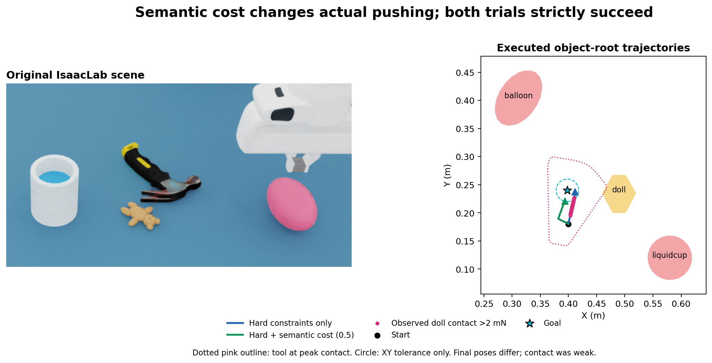

新布局留出测试
严格成功：hard 5/20，soft 4/20。soft 另有一场到位但缺少历史 0.5 N 接触证据；以已有 0.02 N 接触证据补充统计，两组均 5/20。泛化不足，两组无检测到的 C1 或禁碰违规。与开发回归分开统计。
完整报告与8个录像 · 逐场 CSVFR3＋原装闭合夹爪，20 Hz 参考控制。语义由助手提供并缓存，几何来自仿真真值。尚未完成真机推动链路。
严格成功：hard 5/20，soft 4/20。soft 另有一场到位但缺少历史 0.5 N 接触证据；以已有 0.02 N 接触证据补充统计，两组均 5/20。泛化不足，两组无检测到的 C1 或禁碰违规。与开发回归分开统计。
完整报告与8个录像 · 逐场 CSV10秒重力静置通过；推动 XY 12.30 mm、SO(3) 0.09871 rad、0.5 s 持续达标。未接触布偶／杯子／气球，不证明柔性碰撞安全。

交互三维数值地图（约45MB） · 图 PDF · 独立审计
4 个已知布局 ×5 个工作区整体平移；hard 与 soft 均20/20。这不是新任务泛化率。可选接触场景对照：
